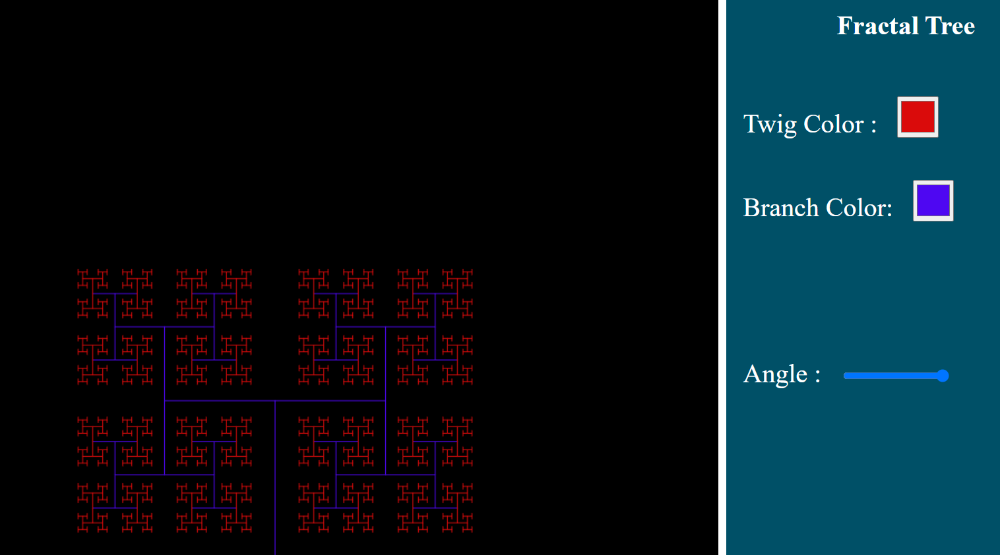
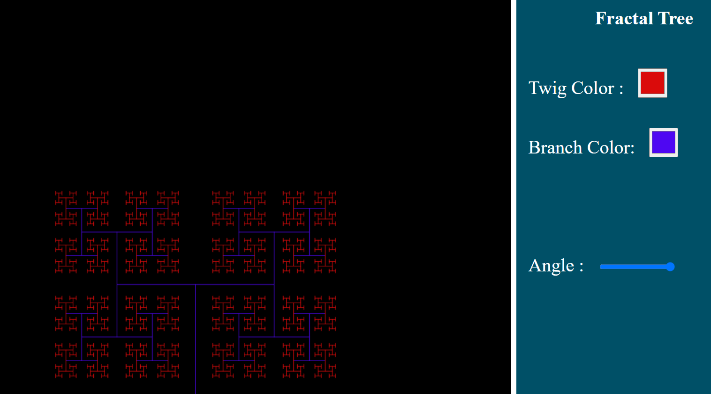

Fractal Tree
Embark on a visual journey with my JavaScript Fractal Tree Generator.This interactive project generates intricate fractal tree structures dynamically, bringing the beauty of fractals to life in your browser. Witness the algorithmic magic as the tree branches recursively extend and bifurcate, creating stunning patterns reminiscent of nature's elegance. With user-friendly controls, you can customize the tree's parameters, exploring the endless variations that emerge from the fractal patterns. The project utilizes the power of JavaScript and the HTML5 canvas element to render these mesmerizing visualizations.